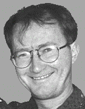

http://debussy.music.ubc.ca/~opus1/hamel.html
hamel@interchange.ubc.ca
Keith Hamel was born in 1956 in Morden, Canada. He is known both as a composer
and a music software developer. He studied music at the Royal Conservatory of
Music of Toronto and Queen's University in Canada, and pursued graduate studies
at Harvard University and the Massachusetts Institute of Technology in the USA.
He holds a Ph.D. in Music from Harvard University. Hamel has written both
acoustic and electroacoustic music and has been awarded many prizes in both
media. His works have been performed by many of the finest soloists and ensembles
both in Canada and abroad. He has received commissions from IRCAM (PARIS), the
Ensemble Intercontemporain, Vancovuer Symphony, Vancouver New Music Ensemble, the
Elektra Women's Choir, bassoonist Jesse Read, clarinetist Jean-Guy Boisvert,
saxophonist Julia Nolan and pianist Douglas Finch. Many of his recent
compositions focus on interaction between live performers and computer-controlled
electronics. As a software developer, Hamel is recognized as one of the foremost
authorities on music notation software. He is author of the NoteWriter program
which is used for professional music engraving and publishing, and has recently
developed a comprehensive music notation package called NoteAbility for OpenStep
/ Mac OS-X computers.
Keith Hamel
5806 Cree St.
Vancouver, B.C.
CANADA V5W 2V9